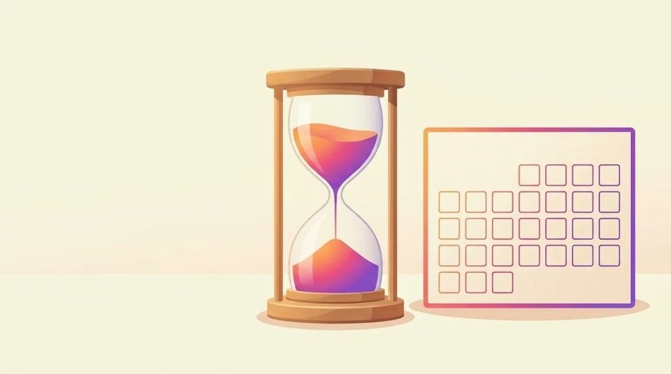

インスタの始め方｜はじめてでも迷わないアカウントの作り方と最初の設定

「インスタで集客したほうがいいよ」と言われても、何から始めればいいか分からず、手が止まっていませんか？
結論から言うと、インスタのアカウントは、アプリを入れて、メールアドレスか電話番号を登録すれば、数分で作れます。アカウントを作るのにお金はかかりません。始める前に「何のためのアカウントか」を決めておくと、名前やプロフィールで迷わなくなります。
この記事は、10のステップの1つめです。アカウントを作るところから、最初にやっておきたい設定までをお伝えします。
確認日：2026年11月13日（Instagram ヘルプセンターで確認。画面や手順は変わることがあります）
この記事でわかること
- アカウントを作る前に決めておくと楽になる2つのこと
- スマホでのアカウントの作り方（1行に1つの操作）
- お店用と自分用を、1つのアプリで分けて使う方法
始める前に決めておく2つのこと
アプリを開く前に、2つだけ決めておきます。
そうすると、あとの入力でほとんど迷わずに進めます。
- 何のためのアカウントか：お店やサービスの集客用か、自分の好きなことを発信する用か
- アカウントの名前：お店の名前、サービスの名前、あなたの活動名など
たとえば、駅前のカフェなら「お店の集客用」で、名前は「お店の名前」です。
パン屋さんや美容室、習いごとの教室でも、考え方は同じです。
お店の集客に使うなら、私生活用とは別のアカウントを作ると安心です。
家族や友だちとのやりとりと、お店のお知らせが混ざらずにすみます。
あとで説明するとおり、インスタは1つのアプリで、複数のアカウントを切り替えて使えます。
新しくスマホを用意する必要はありません。
年齢の決まりを確認する

Instagram は、多くの国で13歳以上から使えます。
日本も13歳以上です。
国や地域によっては、14歳以上や16歳以上の場合もあります。
ここで1つ、知っておくと迷わないことがあります。
お店やペットのアカウントを作る場合でも、誕生日の欄には、あなた自身の誕生日を入れるよう、公式ヘルプで案内されています。
お店の創業日や、ペットの誕生日を入れたくなるかもしれません。
誕生日の欄は「アカウントを持つ人」の年齢を確かめるためのものなので、あなたの誕生日を入れると覚えておくと安心です。
アカウントの作り方（スマホのアプリ）
スマホのアプリでの作り方は、次の順番です。
1行に1つの操作なので、上から順に進めると終わります。
- iPhone なら「App Store」、Android なら「Google Play」を開く
- 「Instagram」と検索して、アプリを入れる
- アプリを開いて「新しいアカウントを作成」を押す
- メールアドレスか、携帯電話番号を入れる
- 届いた認証コード（本人確認のための数字）を入れる
- パスワードを決めて入れる
- あなた自身の誕生日を入れる
- 名前を入れる
- ユーザーネーム（@から始まるID）を決める
- 利用規約などを確認して、同意する
認証コードは、入れたメールアドレスか電話番号に届きます。
メールなら受信箱、電話番号ならショートメッセージを見てみてください。
パソコンからも、instagram.com から同じように作れます。
スマホの文字入力が苦手な人は、パソコンで作るのも1つの方法です。
すでに Facebook のアカウントを持っている人は、Facebook のアカウントから、インスタのアカウントを作ることもできます。
この場合、2つのアカウントはアカウントセンター（Meta のアカウントをまとめて管理する場所）でつながります。
Meta（メタ）は、Instagram と Facebook を運営している会社の名前です。
「名前」と「ユーザーネーム」の違い
インスタには、よく似た言葉の欄が2つあります。
ここで迷う人がとても多いので、表で並べてみました。
| 項目 | どこに出るか | 例 | 決めるコツ |
|---|---|---|---|
| 名前 | プロフィールのいちばん上の太字 | 駅前の小さなカフェ ひだまり | 何のお店か分かる言葉を入れる |
| ユーザーネーム | @から始まるID。URL（インターネット上の住所）にもなる | @hidamari_cafe | 短く、読みやすく、覚えやすく |
つまり、「名前」は看板の文字で、「ユーザーネーム」は住所のようなものです。
ユーザーネームは、ほかの人とかぶらない、世界に1つだけのIDです。
使いたいものがすでに使われている時は、少し足してみると見つかります。
公式ヘルプでは、ピリオド（.）、数字、アンダーバー（_）を足してみるよう案内されています。
- 例：hidamari が使われていたら、hidamari_cafe や hidamari.cafe を試す
名前の欄は、インスタの中の検索にも使われます。
お店なら「カフェ」「パン」「美容室」のように、何のお店か分かる言葉を入れておくと、見つけてもらいやすくなります。
お店用と自分用を分ける時は「アカウントを追加」
すでに自分用のアカウントがある人は、お店用のアカウントを追加できます。
新しいアプリを入れる必要はありません。
- 自分のプロフィール画面を開く
- 右上のメニュー（三本線のマーク）を押す
- 出てきた一覧の、いちばん下の「アカウントを追加」を押す
- 新しくアカウントを作るか、持っているアカウントでログインする
公式ヘルプによると、同時に最大10個のアカウントにログインして、ログアウトせずに切り替えられます。
切り替える時は、プロフィール画面のいちばん上にあるユーザーネームを押すだけです。
押すと、ログインしているアカウントの一覧が出るので、使いたいほうを選びます。
「お店用に投稿したつもりが、自分用に投稿していた」というまちがいは、意外とよく起こります。
投稿する前に、画面の上のアカウント名を1回見る習慣をつけておくと、こうしたまちがいがぐっと減ります。
最初にやっておきたい3つの設定
アカウントができたら、次の3つをやっておくと、あとが楽になります。
どれも数分で終わります。
プロフィール写真を入れる
プロフィール写真は、あなたのアカウントの「顔」になります。
お店ならロゴかお店の外観、個人なら顔が分かる写真が向いています。
プロフィール写真は、小さな丸で表示されます。
小さくしても何か分かる写真を選ぶと、ひと目で見分けてもらえます。
パン屋さんなら、看板のパンを大きく写した写真も分かりやすいです。
二段階認証をオンにする
二段階認証は、パスワードのほかに、もう1つの確認をする仕組みです。
オンにしておくと、乗っ取り（他人に勝手にログインされること）を防ぎやすくなります。
お店のアカウントが乗っ取られると、お客さんにも迷惑がかかってしまいます。
最初に設定しておくと、そのあとはずっと安心して使えます。
設定は、アカウントセンターの「パスワードとセキュリティ」から行えます。
公開か非公開かを決める
集客に使うアカウントは、公開にしておくことが大切です。
非公開だと、フォロワー（あなたのアカウントを登録してくれた人）以外には、投稿が見えません。
これから出会うお客さんに見てもらうには、公開のほうが向いています。
また、STEP 3 のプロアカウントは、非公開にはできない決まりになっています。
プロアカウントは、お店や仕事で使う人向けのアカウントの種類です。
よくある質問
Q. お金はかかりますか？
アカウントを作るのは無料です。
次のSTEPで出てくる、プロアカウントへの切り替えも無料です。
投稿の数字を見るインサイト（数字を見る画面）も、公開アカウントなら無料で使えます。
動画を作る Edits アプリも無料です（有料の Edits Plus もあります）。
お金がかかるのは、広告（お金を払って投稿を宣伝すること）を出す時や、Meta の有料の認証バッジなど、別の有料サービスを申し込んだ時です。
どれも集客を始めるのに必須ではありません。
料金は、申し込む前にアプリの画面で確認できます。
Q. 間違えたら、あとで直せますか？
ユーザーネームは、あとから変えることができます。
公開か非公開かも、あとから設定で切り替えられます。
プロアカウントにしたあとも、いつでも個人のアカウントに戻せます。
気をつけたいのは、誕生日です。
誕生日はあなた自身のものを、最初から正しく入れておくと安心です。
Q. スマホが苦手でもできますか？
はい、できます。
この記事の手順を、上から1行ずつ進めれば大丈夫です。
文字入力が大変な時は、パソコンの instagram.com から作ることもできます。
Q. 知り合いに見つかりたくない時は？
お店用のアカウントを、自分用とは別に作るのがおすすめです。
名前とプロフィールをお店のものにしておけば、お店のアカウントとして見てもらえます。
集客に使うアカウントは公開にする必要があるので、私生活のことは自分用のアカウントに分けておくと気が楽です。
まとめ
インスタの始め方を、もう一度まとめます。
- 始める前に「何のためのアカウントか」と「名前」を決めておく
- 13歳以上から使える。お店のアカウントでも、誕生日はあなた自身のものを入れる
- メールアドレスか電話番号で、数分でアカウントを作れる。作るのは無料
- 名前は検索に使われるので、何のお店か分かる言葉を入れる
- お店用は「アカウントを追加」で分けて作れる（最大10個まで切り替え）
- プロフィール写真、二段階認証、公開の設定を最初にやっておく
アカウントができたら、次はSTEP 2 プロフィールの書き方です。
プロフィールは、あなたのお店の「看板」になる大切な場所です。
あなたのお店なら、名前の欄にどんな言葉を入れますか？
最後まで読んでくださり、ありがとうございました。
まずは、この記事のステップを1つだけ、今日のうちにやってみませんか。5分でできることから始めると、次のステップが楽になります。
あなたのインスタで、いちばん届けたい相手はどんな人ですか？
この記事は下書きにAIを使い、内容は運営者が公式情報で確認しています。画像はAIで作成したイメージです。